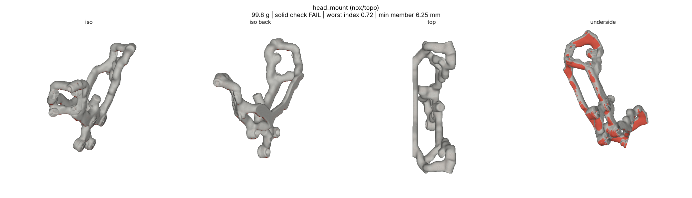
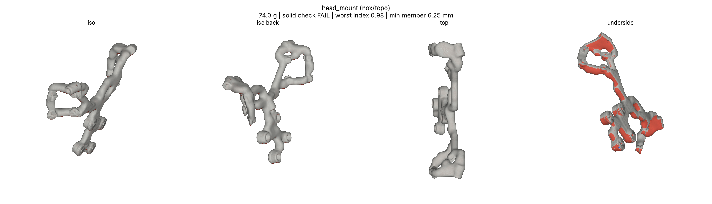
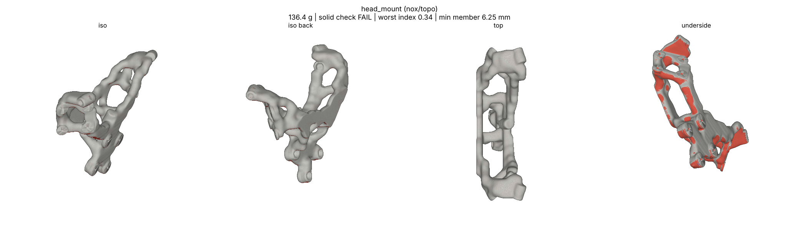

<title>Head Mount Sizing Round 2</title>
<style>
:root{--bg:#f6f7f8;--fg:#1d2329;--muted:#5d6872;--line:#d6dbe0}
@media (prefers-color-scheme:dark){:root:not([data-theme="light"]){--bg:#14181c;--fg:#e4e8ec;--muted:#9aa5ae;--line:#2c343b;color-scheme:dark}}
:root[data-theme="dark"]{--bg:#14181c;--fg:#e4e8ec;--muted:#9aa5ae;--line:#2c343b;color-scheme:dark}
body{background:var(--bg);color:var(--fg);font-family:system-ui,sans-serif;line-height:1.5;padding:24px 16px 48px}
main{max-width:1100px;margin:0 auto;display:grid;gap:14px}
h1{font-size:1.6rem;margin:0} p{margin:0;max-width:72ch;color:var(--muted)}
figure{margin:0;background:#fff;border:1px solid var(--line);border-radius:6px;overflow-x:auto}
img{display:block;width:100%;min-width:760px} figcaption{font-size:.85rem;color:var(--muted);padding:6px 12px;background:var(--bg)}
</style>
<main>
<h1>Sensor head on 3 rods: sizing round 2</h1>
<p>All three coarse runs (h 4) now pass the solid check on the exact file, with all three rod sockets holding the head and every socket clear of the L2 and camera keep-outs. The run's own label still says FAIL from its stricter in-run gate (a 0.995 share at a 2 mm erosion); the project's solid check reads PASS. 60 cm³ goes to the fine run (h 2.25).</p>
<figure><figcaption>60 cm³: 99.8 g, worst index 0.72 (chosen for the fine run).</figcaption></figure>
<figure><figcaption>40 cm³: 74.0 g, worst 0.98.</figcaption></figure>
<figure><figcaption>90 cm³: 136.5 g, worst 0.34.</figcaption></figure>
</main>
